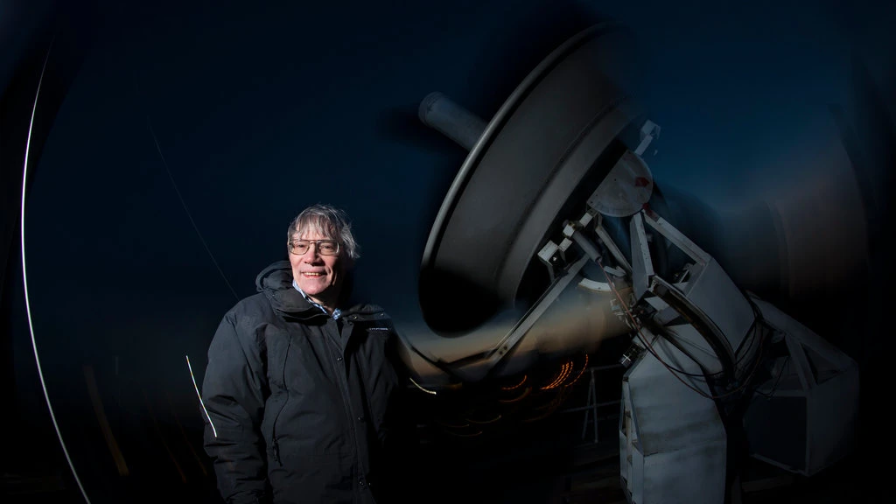

Space Ripples Reveal Big Bang’s Smoking Gun

CAMBRIDGE, Mass. — One night late in 1979, an itinerant young
physicist named Alan Guth, with a new son and a year’s appointment
at Stanford, stayed up late with his notebook and equations, venturing
far beyond the world of known physics.
He was trying to understand why there was no trace of some exotic particles
that should have been created in the Big Bang. Instead he discovered
what might have made the universe bang to begin with. A potential hitch in the
presumed course of cosmic evolution could have infused space itself with a special
energy that exerted a repulsive force, causing the universe to swell faster than
the speed of light for a prodigiously violent instant.
If true, the rapid engorgement would solve paradoxes like why the heavens look
uniform from pole to pole and not like a jagged, warped mess. The enormous
ballooning would iron out all the wrinkles and irregularities. Those particles
were not missing, but would be diluted beyond detection, like spit in the ocean.
“SPECTACULAR REALIZATION,” Dr. Guth wrote across the top of the page and drew a
double box around it.
On Monday, Dr. Guth’s starship came in. Radio astronomers reported that they
had seen the beginning of the Big Bang, and that his hypothesis, known
undramatically as inflation, looked right.